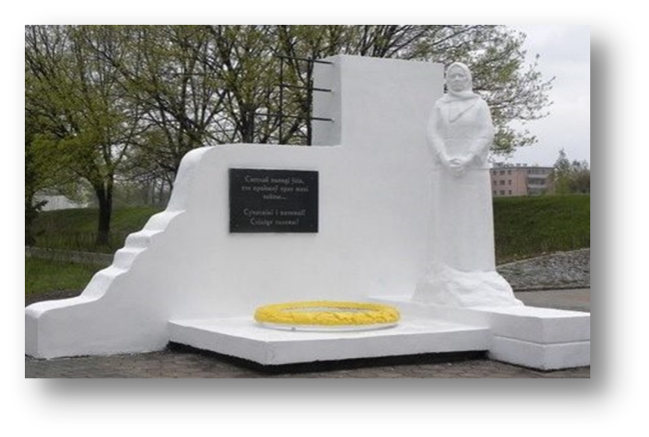
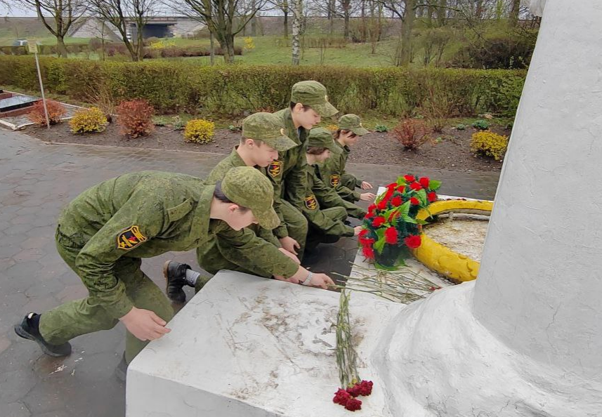
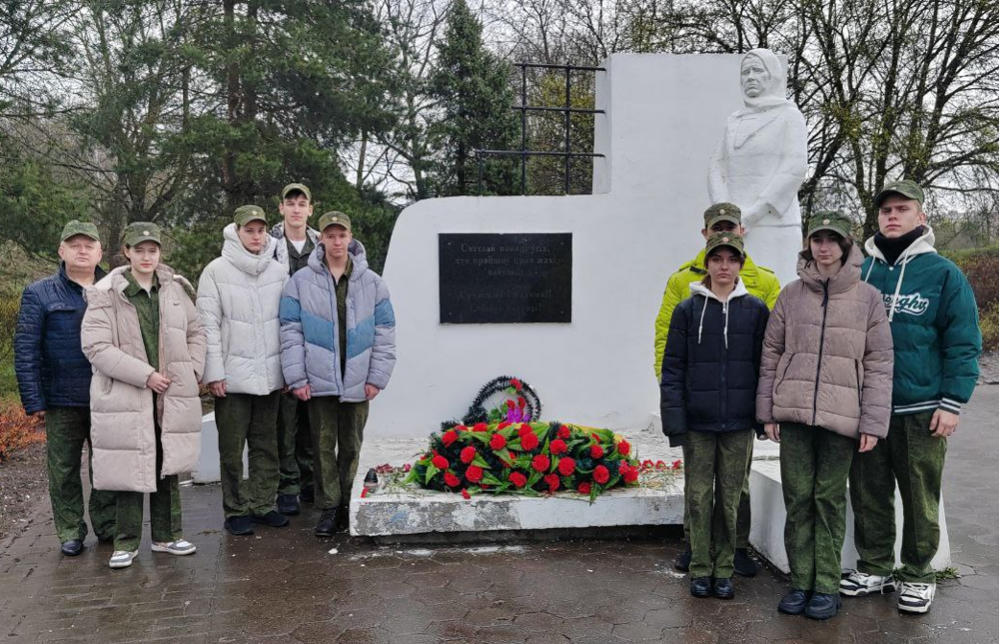

Мемориальный комплекс «Память»



Первым пунктом назначения у нас был г. Барановичи Брестской области.
История мемориала
В 1941 году немецко-фашистские оккупанты создали на территории тюрьмы филиал Леснянского лагеря смерти. Здесь в каторжных условиях содержалось около 20 тыс. человек. Фашисты систематически устраивали массовые расстрелы, применяли различные физические наказания. Зимой люди находились под открытым небом, так как других условий содержания не было. Запрещалось жечь костры, потому что фашисты боялись обозначить место для налета советской авиацией. От холода, голода, болезней, непосильной работы и нечеловеческих условий содержания ежедневно умирали десятки узников. Всего здесь погибло около 31 тысячи военнопленных и мирных жителей.
человек погибло в этом месте
На 20 годовщину освобождения Беларуси от немецко-фашистских захватчиков по улице Брестской на месте массового захоронения узников филиала «Шталага-337» (концлагеря для советских военнопленных), который находился в барановичской тюрьме, был установлен памятник– скульптура «Скорбящая Мать» на невысоком постаменте около бетонной стены с железными решётками, по проекту местного скульптора В. Ягодницкого.
Уже в наши дни этот памятник стал основным в составе мемориального комплекса «Память», который был частично открыт в 1964-м году, в 2005-м превратился в полноценный мемориал, а в 2008-м внесён в список историко-культурных ценностей региона.
Рядом с ним были установлены плиты с текстами, посвящёнными горожанам, погибшим в оккупированном гитлеровцами городе и на фронтах Великой Отечественной войны, угнанным в фашистскую неволю военнопленным, погибшим в концлагере для советских военнопленных «Шталаг-337». Были обозначены контуры огромной, неестественной для людей могилы – места, где нашли упокоение 31 тысяча военнопленных…
Архитектура комплекса
Комплекс представляет собой центральную композицию «Скорбящая мать» и ряд мемориальных плит с текстами, которые посвящены погибшим во время Великой Отечественной войны. Памятник «Скорбящая мать» — это белая скульптура пожилой женщины в косынке высотой больше 2-х метров, «вросшей» ногами в камень, как символ вечного ожидания женщин своих мужчин с фронтов войны, кем бы они ни были — сыновьями, мужьями, отцами, братьями. В ногах у неё — большой каменный венок, а на стене за скульптурой — металлическая решётка. Композицию дополняют чёрные гранитные плиты с надписями.
Освобождение Барановичей
Барановичская область была освобождена в июле 1944 года в ходе наступательной операции «Багратион». 8 июля войска 1-го Белорусского фронта под командованием Маршала Советского Союза Константина Константиновича Рокоссовского освободили областной центр. Овладение городом Барановичи, важным железнодорожным узлом и мощным укрепительным районом обороны немцев, расценивалось советским командованием как крупная победа – 8 июля 1944 года в г. Москва был дан салют войскам 1-го Белорусского фронта, овладевшим городом, двадцатью артиллерийскими залпами из двухсот двадцати четырёх орудий. 28 воинским частям и соединениям, отличившимся в боях, было присвоено почётное наименование «Барановичских», 18 частей были награждены орденами, тысячи солдат, офицеров и генералов были награждены орденами и медалями, получили благодарности Верховного Главнокомандующего.
Наше посещение
На это место в любую погоду, ежегодно приходят представители власти, учащиеся учебных заведений и просто неравнодушные люди, которые возлагают венки и цветы, чтобы почтить память погибших. Мемориальный комплекс «Память» — напоминание нам, ныне живущим о том, что война — это слёзы, горечь, печаль, долгое ожидание и скорбь, которые не должны повторяться в современной и будущей истории всего человечества. Отдать память погибшим в те роковые времена, мы не оказались в стороне. Мы возложили цветы у подножия памятника и почтили минутой молчания.